⟡ The development of my character, Feyn. Includes an entire semester of concepts, modelling, texturing, rigging, weight painting and then animating.
⟡ Used in class tutorial notes as an example of fine student work.
⟡ Created using Autodesk Maya, Autodesk Mudbox, Adobe Substance Painter, Unity, and Clip Studio Paint.
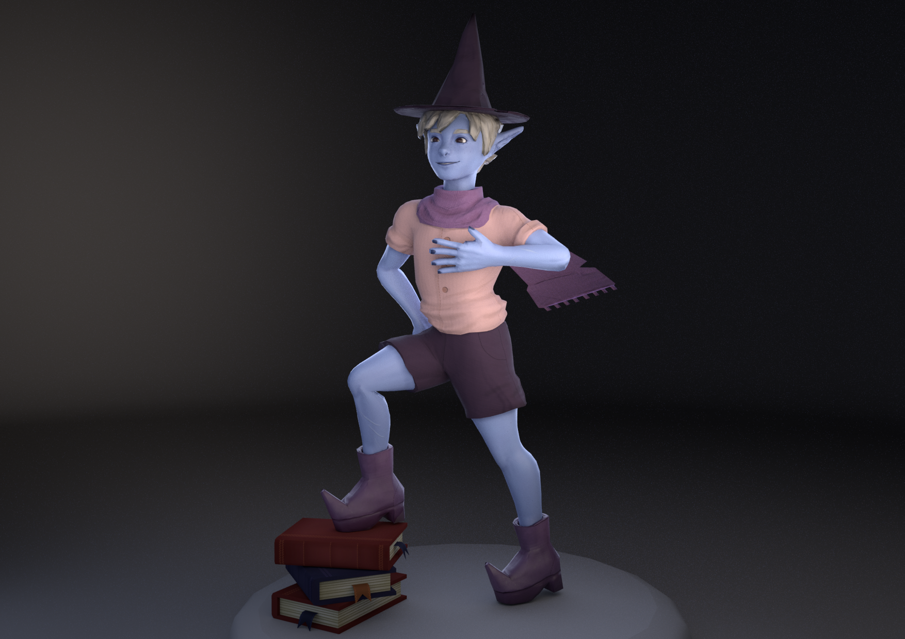
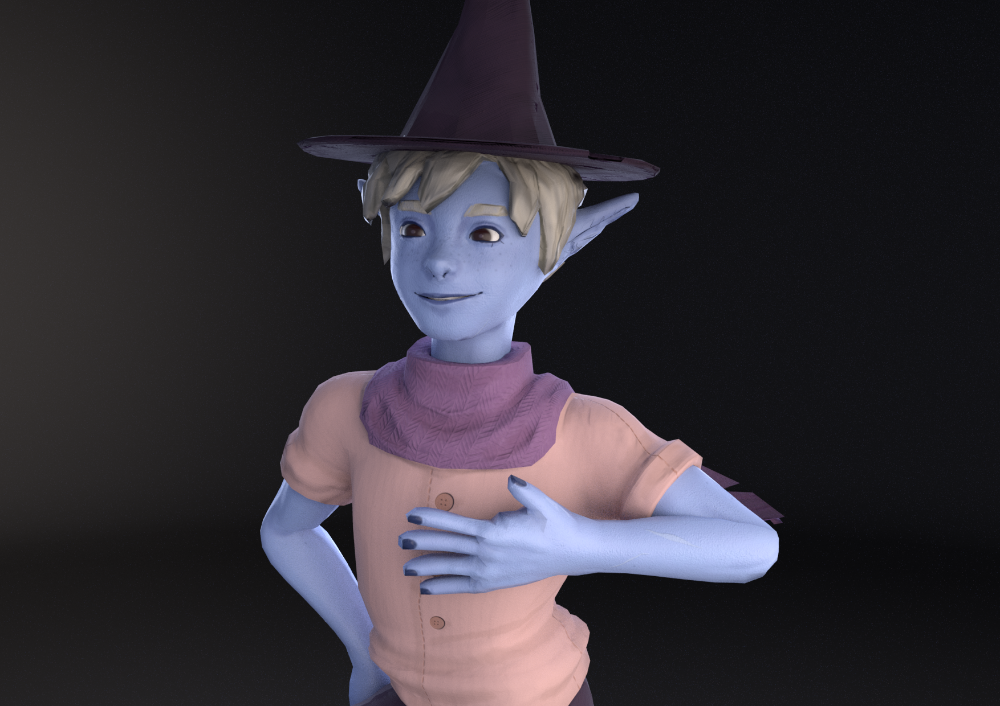
Modelling & Sculpting
Texturing & Rendering
Rigging & Animation
Immersive Environments: Stylised Landscape
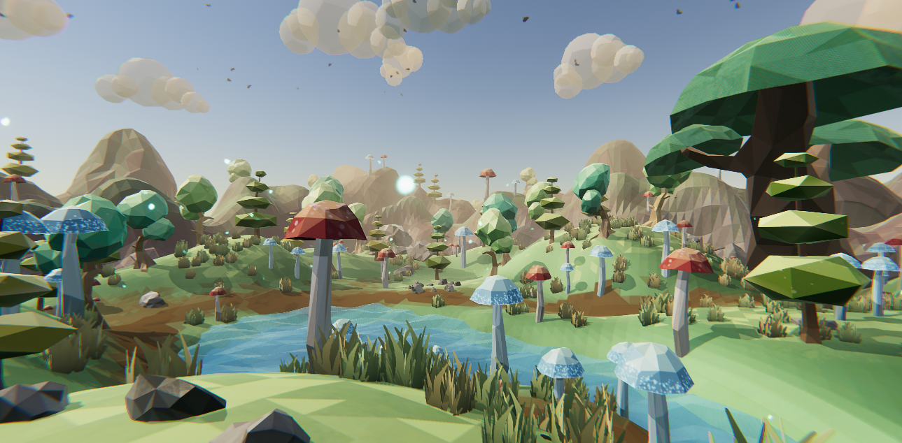
⟡ An enclosed forest area, extremely stylised to make poly and cubist shapes. Includes particle effects and post processing, as well as utilising prefabs and randomisation using Prefab Painter, and reactive and spatial audio using Resonance for Unity.
⟡ Modelling done in Autodesk Maya, texturing done in Substance Painter, environment layout, particles, fog and skybox created in Unity. Audio elements edited in Audacity.
Renders
Modelling, Texturing, Prefabs & Unity
Lowpoly Character: Byrne
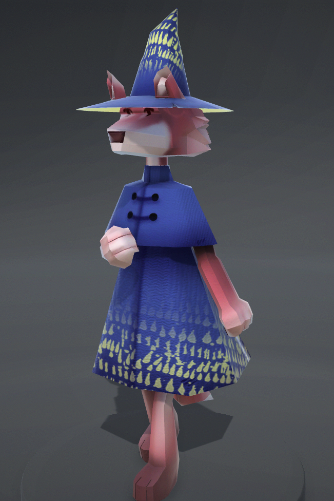
⟡ This project was chosen by tutors as one of the best 3D characters for FIT1033, and displayed as a 360 hologram display for Monash Open Day in 2019.
⟡ My character, Byrne. As this was the first character I ever created I aimed for a lowpoly, block style. Includes concepts, modelling, and flat texturing using UV maps.
⟡ Created using Autodesk Maya, Autodesk Mudbox, Adobe Photoshop, Unity, and Clip Studio Paint.
Lowpoly Environment: Byrne's Wizard Tower
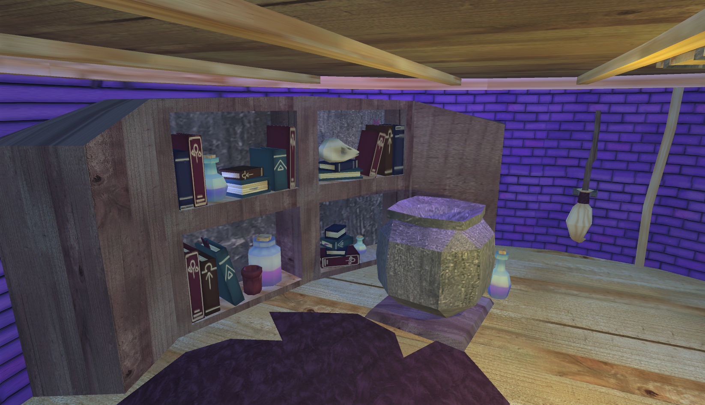
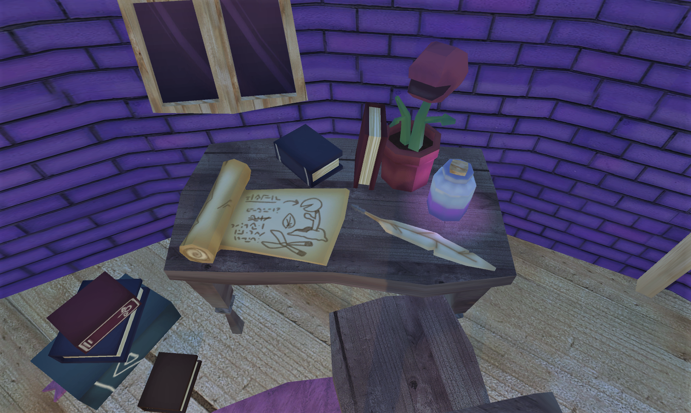
⟡ An environment I created for Byrne. This was the first environment I ever made in 3d, and was tasked to make an enclosed, interior space. Includes concepts, modelling, and texturing using UV maps and normal/height bump maps.
⟡ Created using Autodesk Maya, Autodesk Mudbox, Adobe Photoshop, Unity, and Clip Studio Paint.
Byrne Renders
Modelling & Texturing
Byrne's Tower Renders
Modelling, Texturing & Unity
Immersive Environments: The Escape
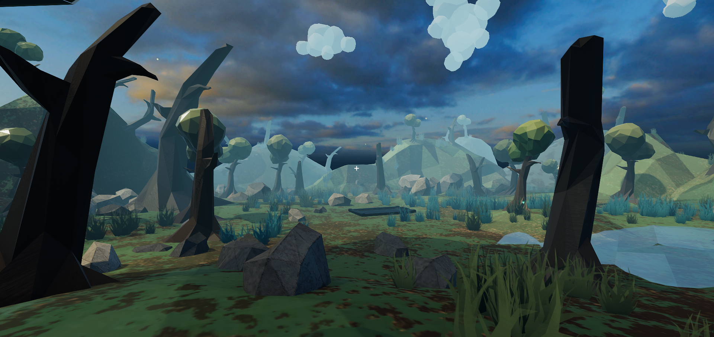
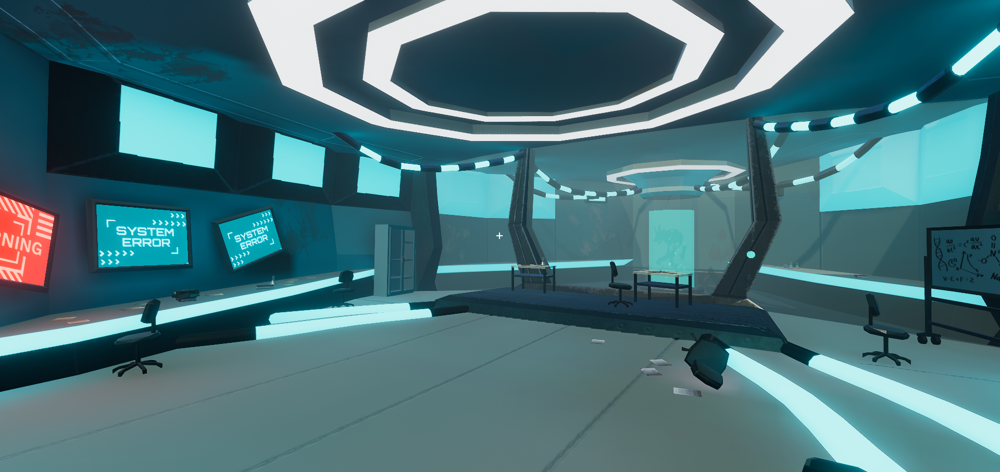
⟡ A narrative based immersive experience, where the viewer finds a metal hatch door in a swampland. Finding a nearby key opens a secret laboratory with a dark past and secrets to discover.
⟡ Includes particles and prefabs, with a focus on the PlayMaker plugin for Unity for storytelling and interactivity.
⟡ Modelling done in Autodesk Maya, texturing done in Substance Painter, environment layout, particles, player events and interactivity done in Unity, using Prefab Painter and Playmaker.
Renders
Modelling, Texturing & Unity
Urban Scene: Alleyway
Modelling, Texturing & Unity
Item Modelling: Camera
⟡ The first 3D project I made, a model of an existing object, a small digital camera. Minimal texturing and rendering, focused on modelling to scale and accuracy. ⟡ Created entirely in Autodesk Maya, using the Arnold renderer.


 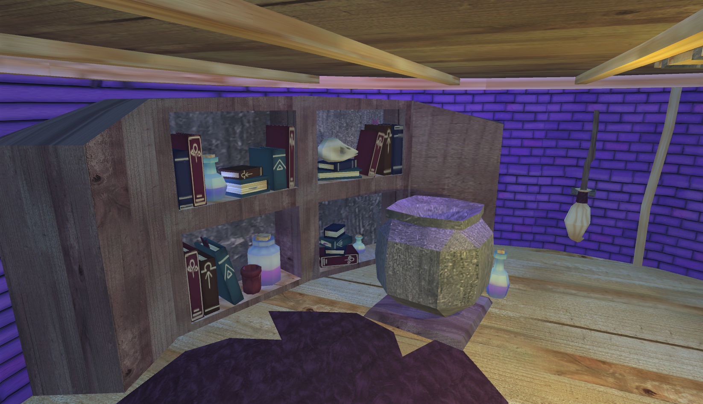
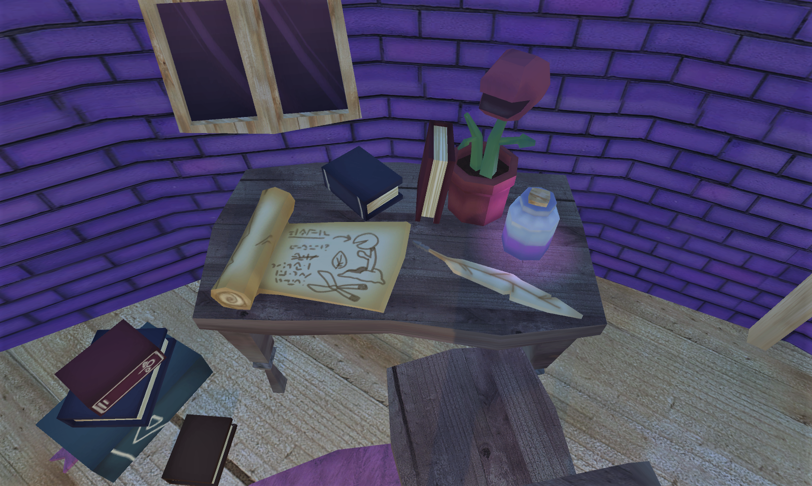
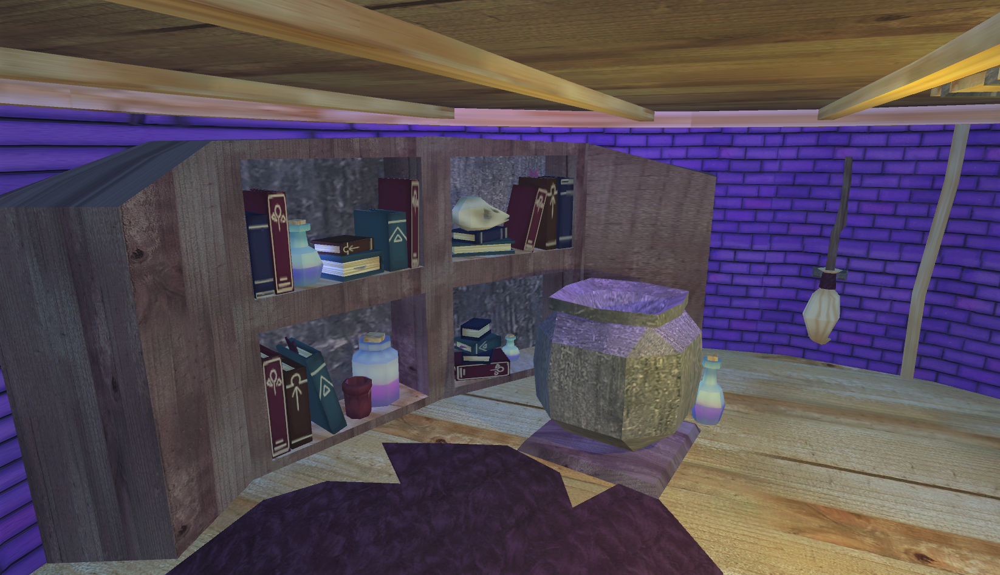
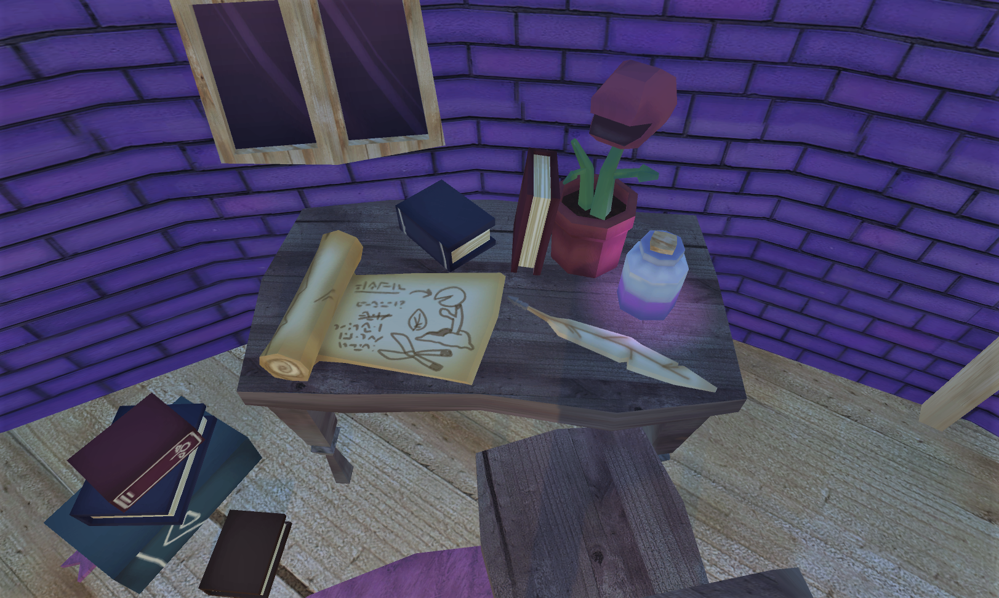


 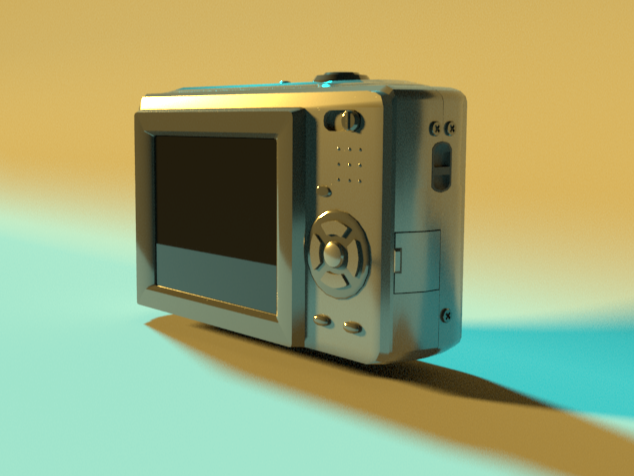
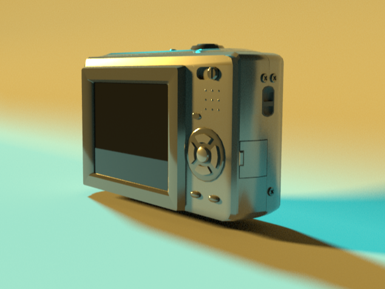